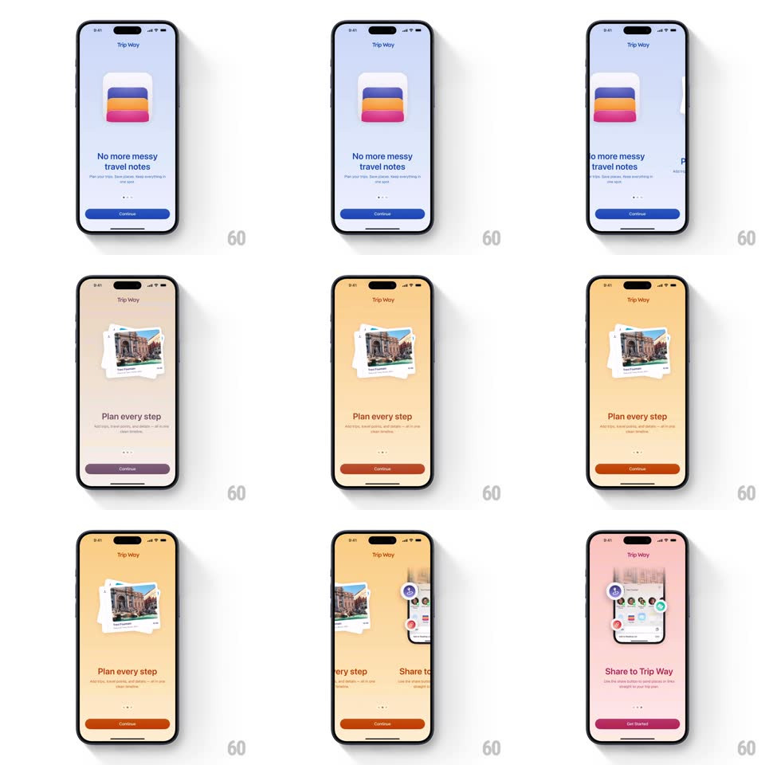

Media
Frame-by-frame

Rebuild this interaction 1:1: Trip Way's intro carousel - swiping morphs the whole screen's background color (light blue -> peach) while a card-stack illustration ("No more messy travel notes", "Plan every step", "Share to Trip Way") springs between pages and the Continue button recolors to match.

Rebuild this interaction 1:1: Trip Way's intro carousel - swiping morphs the whole screen's background color (light blue -> peach) while a card-stack illustration ("No more messy travel notes", "Plan every step", "Share to Trip Way") springs between pages and the Continue button recolors to match.
## Integration
Integration: stack-agnostic spec - springs given as stiffness/damping, timed motions as duration + curve; map every value to your framework and animation library of choice.
## Scene
Full-color onboarding pages: "Trip Way" title top-center, a central illustration (stack of colorful cards; a pile of travel photos; a share-sheet mockup), bold headline with subline, page dots, and a full-width "Continue" button whose fill matches the page's accent (blue on blue, orange on peach).
## Motion spec
Pattern: full-bleed color-morph carousel, ~450ms.
- Swipe: pages track the drag 1:1; the background color blends continuously between page palettes tied to drag position.
- Illustration: the exiting stack slides and rotates off (+-10deg) with spring; the incoming stack bounces in (scale 0.9 -> 1.03 -> 1, spring ~320/18, 350ms).
- Text: headline and subline slide 20px with fade (250ms, 60ms stagger).
- Button: the Continue fill crossfades to the new accent (300ms) as the page settles; dots swap active state (200ms).
## Calibration
- Background blending is drag-position-driven - half-swipe shows a blended color.
- Button and background accents always match the settled page.
## Reduced motion
Pages crossfade with background fade (300ms); no spring bounce.
## Don't miss
- The button recoloring per page is part of the effect - it never stays one color.
- The photo-stack illustration keeps its tilted-polaroid look through the bounce.